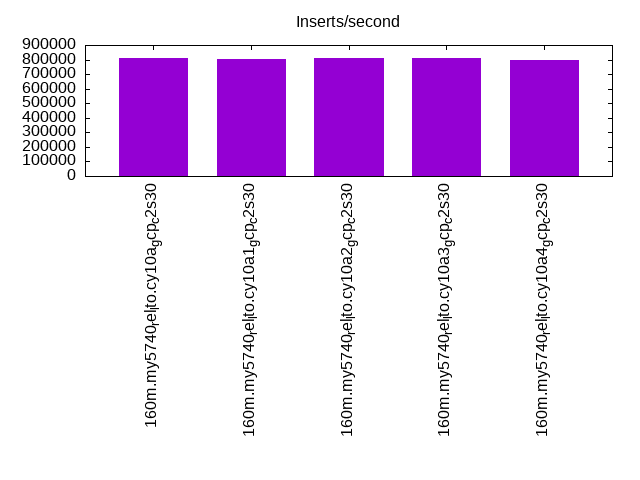
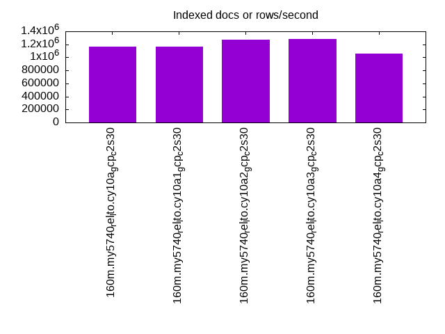
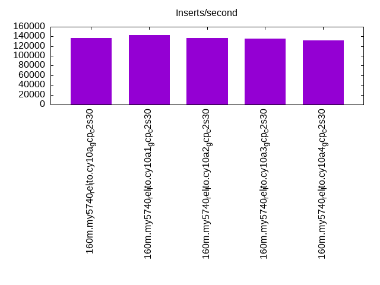
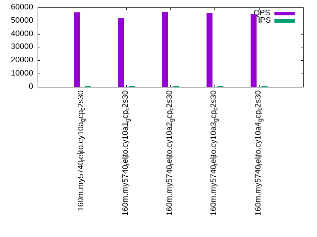
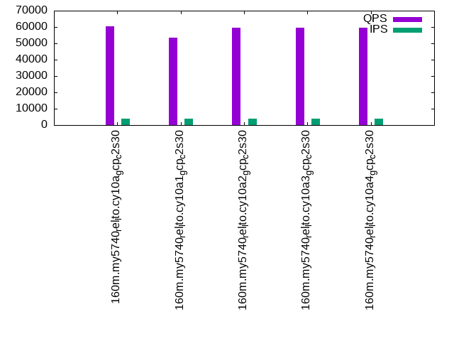
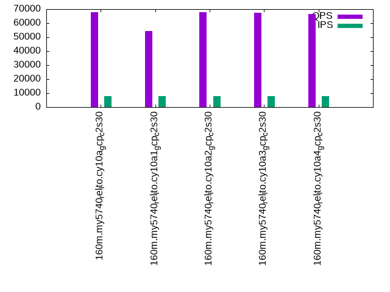

This is a report for the insert benchmark with 160M docs and 8 client(s). It is generated by scripts (bash, awk, sed) and Tufte might not be impressed. An overview of the insert benchmark is here and a short update is here. Below, by DBMS, I mean DBMS+version.config. An example is my8020.c10b40 where my means MySQL, 8020 is version 8.0.20 and c10b40 is the name for the configuration file.
The test server is a c2-standard-30 from GCP with 15 cores, hyperthreads disabled, 120G RAM, XFS + SW RAID 0 on 4 NVMe devices (1.5TB). The benchmark was run with 8 client and there were 1 or 3 connections per client (1 for queries or inserts without rate limits, 1+1 for rate limited inserts+deletes). There are 8 tables, client per table. It loads 160M rows without secondary indexes, creates secondary indexes, then inserts 80M rows with a delete per insert to avoid growing the table. It then does 3 read+write tests for 1800s each that do queries as fast as possible with 100, 500 and then 1000 inserts/second/client concurrent with the queries and 1000 deletes/second to avoid growing the table. The database is cached by InnoDB and the only IO is for writes.
The tested DBMS are:
The numbers are inserts/s for l.i0 and l.i1, indexed docs (or rows) /s for l.x and queries/s for q*.2. The values are the average rate over the entire test for inserts (IPS) and queries (QPS). The range of values for IPS and QPS is split into 3 parts: bottom 25%, middle 50%, top 25%. Values in the bottom 25% have a red background, values in the top 25% have a green background and values in the middle have no color. A gray background is used for values that can be ignored because the DBMS did not sustain the target insert rate. Red backgrounds are not used when the minimum value is within 80% of the max value.
| dbms | l.i0 | l.x | l.i1 | q100.1 | q500.1 | q1000.1 |
|---|---|---|---|---|---|---|
| 160m.my5740_rel_lto.cy10a_gcp_c2s30 | 812183 | 1168613 | 137368 | 56095 | 60273 | 67691 |
| 160m.my5740_rel_lto.cy10a1_gcp_c2s30 | 804020 | 1168613 | 142634 | 51823 | 53523 | 54549 |
| 160m.my5740_rel_lto.cy10a2_gcp_c2s30 | 808081 | 1270635 | 137133 | 56577 | 59765 | 67755 |
| 160m.my5740_rel_lto.cy10a3_gcp_c2s30 | 812183 | 1280800 | 135997 | 55898 | 59398 | 67402 |
| 160m.my5740_rel_lto.cy10a4_gcp_c2s30 | 800000 | 1053289 | 132122 | 55121 | 59376 | 66695 |
This table has relative throughput, throughput for the DBMS relative to the DBMS in the first line, using the absolute throughput from the previous table.
| dbms | l.i0 | l.x | l.i1 | q100.1 | q500.1 | q1000.1 |
|---|---|---|---|---|---|---|
| 160m.my5740_rel_lto.cy10a_gcp_c2s30 | 1.00 | 1.00 | 1.00 | 1.00 | 1.00 | 1.00 |
| 160m.my5740_rel_lto.cy10a1_gcp_c2s30 | 0.99 | 1.00 | 1.04 | 0.92 | 0.89 | 0.81 |
| 160m.my5740_rel_lto.cy10a2_gcp_c2s30 | 0.99 | 1.09 | 1.00 | 1.01 | 0.99 | 1.00 |
| 160m.my5740_rel_lto.cy10a3_gcp_c2s30 | 1.00 | 1.10 | 0.99 | 1.00 | 0.99 | 1.00 |
| 160m.my5740_rel_lto.cy10a4_gcp_c2s30 | 0.98 | 0.90 | 0.96 | 0.98 | 0.99 | 0.99 |
This lists the average rate of inserts/s for the tests that do inserts concurrent with queries. For such tests the query rate is listed in the table above. The read+write tests are setup so that the insert rate should match the target rate every second. Cells that are not at least 95% of the target have a red background to indicate a failure to satisfy the target.
| dbms | q100.1 | q500.1 | q1000.1 |
|---|---|---|---|
| my5740_rel_lto.cy10a_gcp_c2s30 | 793 | 3978 | 7956 |
| my5740_rel_lto.cy10a1_gcp_c2s30 | 753 | 3852 | 7869 |
| my5740_rel_lto.cy10a2_gcp_c2s30 | 794 | 3978 | 7960 |
| my5740_rel_lto.cy10a3_gcp_c2s30 | 793 | 3976 | 7960 |
| my5740_rel_lto.cy10a4_gcp_c2s30 | 792 | 3976 | 7956 |
| target | 800 | 4000 | 8000 |
l.i0: load without secondary indexes. Graphs for performance per 1-second interval are here.
Average throughput:
Insert response time histogram: each cell has the percentage of responses that take <= the time in the header and max is the max response time in seconds. For the max column values in the top 25% of the range have a red background and in the bottom 25% of the range have a green background. The red background is not used when the min value is within 80% of the max value.
| dbms | 256us | 1ms | 4ms | 16ms | 64ms | 256ms | 1s | 4s | 16s | gt | max |
|---|---|---|---|---|---|---|---|---|---|---|---|
| my5740_rel_lto.cy10a_gcp_c2s30 | 97.287 | 2.650 | 0.030 | 0.019 | 0.015 | 0.234 | |||||
| my5740_rel_lto.cy10a1_gcp_c2s30 | 97.180 | 2.756 | 0.031 | 0.019 | 0.015 | 0.235 | |||||
| my5740_rel_lto.cy10a2_gcp_c2s30 | 96.923 | 3.013 | 0.033 | 0.017 | 0.015 | 0.233 | |||||
| my5740_rel_lto.cy10a3_gcp_c2s30 | 97.401 | 2.536 | 0.032 | 0.017 | 0.015 | 0.246 | |||||
| my5740_rel_lto.cy10a4_gcp_c2s30 | 96.785 | 2.979 | 0.196 | 0.026 | 0.014 | 0.218 |
Performance metrics for the DBMS listed above. Some are normalized by throughput, others are not. Legend for results is here.
ips qps rps rmbps wps wmbps rpq rkbpq wpi wkbpi csps cpups cspq cpupq dbgb1 dbgb2 rss maxop p50 p99 tag 812183 0 0 0.0 1478.3 157.1 0.000 0.000 0.002 0.198 80731 69.7 0.099 13 10.6 139.1 17.2 0.234 112978 85835 160m.my5740_rel_lto.cy10a_gcp_c2s30 804020 0 0 0.0 1468.4 156.3 0.000 0.000 0.002 0.199 82073 70.0 0.102 13 10.6 139.1 17.2 0.235 111679 85736 160m.my5740_rel_lto.cy10a1_gcp_c2s30 808081 0 0 0.0 1550.2 159.0 0.000 0.000 0.002 0.201 80274 70.1 0.099 13 10.6 139.1 17.2 0.233 111515 81711 160m.my5740_rel_lto.cy10a2_gcp_c2s30 812183 0 0 0.0 1561.2 157.9 0.000 0.000 0.002 0.199 80527 69.9 0.099 13 10.6 139.1 17.2 0.246 112379 86906 160m.my5740_rel_lto.cy10a3_gcp_c2s30 800000 0 0 0.0 573.1 151.8 0.000 0.000 0.001 0.194 80169 69.4 0.100 13 10.6 139.1 17.2 0.218 110481 87334 160m.my5740_rel_lto.cy10a4_gcp_c2s30
l.x: create secondary indexes.
Average throughput:
Performance metrics for the DBMS listed above. Some are normalized by throughput, others are not. Legend for results is here.
ips qps rps rmbps wps wmbps rpq rkbpq wpi wkbpi csps cpups cspq cpupq dbgb1 dbgb2 rss maxop p50 p99 tag 1168613 0 0 0.0 13961.9 1060.7 0.000 0.000 0.012 0.929 48986 37.2 0.042 5 23.6 152.1 28.6 0.029 NA NA 160m.my5740_rel_lto.cy10a_gcp_c2s30 1168613 0 0 0.0 13965.9 1060.4 0.000 0.000 0.012 0.929 89590 37.3 0.077 5 23.6 152.1 28.6 0.029 NA NA 160m.my5740_rel_lto.cy10a1_gcp_c2s30 1270635 0 0 0.0 14220.2 1142.7 0.000 0.000 0.011 0.921 39322 36.2 0.031 4 23.6 152.1 28.6 0.030 NA NA 160m.my5740_rel_lto.cy10a2_gcp_c2s30 1280800 0 0 0.0 14402.7 1149.8 0.000 0.000 0.011 0.919 34806 36.1 0.027 4 23.6 152.1 28.6 0.030 NA NA 160m.my5740_rel_lto.cy10a3_gcp_c2s30 1053289 0 0 0.0 3991.3 926.6 0.000 0.000 0.004 0.901 54333 32.7 0.052 5 23.6 152.1 28.6 0.030 NA NA 160m.my5740_rel_lto.cy10a4_gcp_c2s30
l.i1: continue load after secondary indexes created. Graphs for performance per 1-second interval are here.
Average throughput:
Insert response time histogram: each cell has the percentage of responses that take <= the time in the header and max is the max response time in seconds. For the max column values in the top 25% of the range have a red background and in the bottom 25% of the range have a green background. The red background is not used when the min value is within 80% of the max value.
| dbms | 256us | 1ms | 4ms | 16ms | 64ms | 256ms | 1s | 4s | 16s | gt | max |
|---|---|---|---|---|---|---|---|---|---|---|---|
| my5740_rel_lto.cy10a_gcp_c2s30 | 89.239 | 10.684 | 0.061 | 0.016 | nonzero | 0.275 | |||||
| my5740_rel_lto.cy10a1_gcp_c2s30 | 92.057 | 7.872 | 0.055 | 0.016 | 0.231 | ||||||
| my5740_rel_lto.cy10a2_gcp_c2s30 | 89.033 | 10.910 | 0.041 | 0.016 | nonzero | 0.285 | |||||
| my5740_rel_lto.cy10a3_gcp_c2s30 | 88.690 | 11.253 | 0.041 | 0.016 | nonzero | 0.830 | |||||
| my5740_rel_lto.cy10a4_gcp_c2s30 | 85.578 | 14.336 | 0.069 | 0.017 | nonzero | 0.305 |
Delete response time histogram: each cell has the percentage of responses that take <= the time in the header and max is the max response time in seconds. For the max column values in the top 25% of the range have a red background and in the bottom 25% of the range have a green background. The red background is not used when the min value is within 80% of the max value.
| dbms | 256us | 1ms | 4ms | 16ms | 64ms | 256ms | 1s | 4s | 16s | gt | max |
|---|---|---|---|---|---|---|---|---|---|---|---|
| my5740_rel_lto.cy10a_gcp_c2s30 | nonzero | 88.075 | 11.844 | 0.064 | 0.016 | nonzero | 0.274 | ||||
| my5740_rel_lto.cy10a1_gcp_c2s30 | nonzero | 91.541 | 8.393 | 0.049 | 0.016 | 0.229 | |||||
| my5740_rel_lto.cy10a2_gcp_c2s30 | nonzero | 88.016 | 11.924 | 0.044 | 0.016 | nonzero | 0.284 | ||||
| my5740_rel_lto.cy10a3_gcp_c2s30 | 0.001 | 87.707 | 12.231 | 0.046 | 0.016 | nonzero | 0.287 | ||||
| my5740_rel_lto.cy10a4_gcp_c2s30 | 0.025 | 89.089 | 10.818 | 0.049 | 0.018 | nonzero | 0.278 |
Performance metrics for the DBMS listed above. Some are normalized by throughput, others are not. Legend for results is here.
ips qps rps rmbps wps wmbps rpq rkbpq wpi wkbpi csps cpups cspq cpupq dbgb1 dbgb2 rss maxop p50 p99 tag 137368 0 138 2.2 6887.5 268.3 0.001 0.016 0.050 2.000 54299 87.4 0.395 95 80.0 230.7 86.9 0.275 17381 13385 160m.my5740_rel_lto.cy10a_gcp_c2s30 142634 0 325 5.1 7327.2 286.3 0.002 0.036 0.051 2.055 69945 87.0 0.490 91 100.5 261.4 86.9 0.231 18087 14085 160m.my5740_rel_lto.cy10a1_gcp_c2s30 137133 0 139 2.2 8472.6 316.1 0.001 0.016 0.062 2.360 57225 87.1 0.417 95 80.1 230.8 86.9 0.285 17331 13336 160m.my5740_rel_lto.cy10a2_gcp_c2s30 135997 0 140 2.2 8419.0 313.9 0.001 0.016 0.062 2.363 56703 87.2 0.417 96 80.2 230.9 86.9 0.830 17231 13336 160m.my5740_rel_lto.cy10a3_gcp_c2s30 132122 0 16 2.5 5741.8 254.6 0.000 0.020 0.043 1.973 54551 84.7 0.413 96 83.0 234.8 86.9 0.305 16773 12586 160m.my5740_rel_lto.cy10a4_gcp_c2s30
q100.1: range queries with 100 insert/s per client. Graphs for performance per 1-second interval are here.
Average throughput:
Query response time histogram: each cell has the percentage of responses that take <= the time in the header and max is the max response time in seconds. For max values in the top 25% of the range have a red background and in the bottom 25% of the range have a green background. The red background is not used when the min value is within 80% of the max value.
| dbms | 256us | 1ms | 4ms | 16ms | 64ms | 256ms | 1s | 4s | 16s | gt | max |
|---|---|---|---|---|---|---|---|---|---|---|---|
| my5740_rel_lto.cy10a_gcp_c2s30 | 99.727 | 0.263 | 0.009 | nonzero | nonzero | 0.020 | |||||
| my5740_rel_lto.cy10a1_gcp_c2s30 | 99.403 | 0.589 | 0.008 | nonzero | nonzero | nonzero | 0.078 | ||||
| my5740_rel_lto.cy10a2_gcp_c2s30 | 99.721 | 0.269 | 0.010 | nonzero | nonzero | 0.024 | |||||
| my5740_rel_lto.cy10a3_gcp_c2s30 | 99.706 | 0.284 | 0.009 | 0.001 | nonzero | 0.024 | |||||
| my5740_rel_lto.cy10a4_gcp_c2s30 | 99.630 | 0.330 | 0.034 | 0.006 | nonzero | 0.038 |
Insert response time histogram: each cell has the percentage of responses that take <= the time in the header and max is the max response time in seconds. For max values in the top 25% of the range have a red background and in the bottom 25% of the range have a green background. The red background is not used when the min value is within 80% of the max value.
| dbms | 256us | 1ms | 4ms | 16ms | 64ms | 256ms | 1s | 4s | 16s | gt | max |
|---|---|---|---|---|---|---|---|---|---|---|---|
| my5740_rel_lto.cy10a_gcp_c2s30 | 92.747 | 7.219 | 0.035 | 0.023 | |||||||
| my5740_rel_lto.cy10a1_gcp_c2s30 | 97.326 | 2.653 | 0.021 | 0.021 | |||||||
| my5740_rel_lto.cy10a2_gcp_c2s30 | 91.812 | 8.111 | 0.076 | 0.026 | |||||||
| my5740_rel_lto.cy10a3_gcp_c2s30 | 90.417 | 9.517 | 0.066 | 0.026 | |||||||
| my5740_rel_lto.cy10a4_gcp_c2s30 | 85.941 | 13.736 | 0.319 | 0.003 | 0.067 |
Delete response time histogram: each cell has the percentage of responses that take <= the time in the header and max is the max response time in seconds. For max values in the top 25% of the range have a red background and in the bottom 25% of the range have a green background. The red background is not used when the min value is within 80% of the max value.
| dbms | 256us | 1ms | 4ms | 16ms | 64ms | 256ms | 1s | 4s | 16s | gt | max |
|---|---|---|---|---|---|---|---|---|---|---|---|
| my5740_rel_lto.cy10a_gcp_c2s30 | 94.243 | 5.740 | 0.017 | 0.021 | |||||||
| my5740_rel_lto.cy10a1_gcp_c2s30 | 98.056 | 1.931 | 0.014 | 0.023 | |||||||
| my5740_rel_lto.cy10a2_gcp_c2s30 | 93.611 | 6.319 | 0.069 | 0.026 | |||||||
| my5740_rel_lto.cy10a3_gcp_c2s30 | 92.226 | 7.708 | 0.066 | 0.026 | |||||||
| my5740_rel_lto.cy10a4_gcp_c2s30 | 91.330 | 8.535 | 0.135 | 0.029 |
Performance metrics for the DBMS listed above. Some are normalized by throughput, others are not. Legend for results is here.
ips qps rps rmbps wps wmbps rpq rkbpq wpi wkbpi csps cpups cspq cpupq dbgb1 dbgb2 rss maxop p50 p99 tag 793 56095 887 13.9 3595.0 116.6 0.016 0.253 4.532 150.523 184379 72.8 3.287 195 80.0 230.7 86.9 0.020 7080 6713 160m.my5740_rel_lto.cy10a_gcp_c2s30 753 51823 1679 26.2 3825.3 108.0 0.032 0.518 5.082 146.864 193183 71.0 3.728 206 100.5 261.4 86.9 0.078 6569 5402 160m.my5740_rel_lto.cy10a1_gcp_c2s30 794 56577 901 14.1 3886.1 125.6 0.016 0.255 4.896 162.055 183519 73.2 3.244 194 80.1 230.8 86.9 0.024 7144 6731 160m.my5740_rel_lto.cy10a2_gcp_c2s30 793 55898 892 13.9 3824.8 123.5 0.016 0.255 4.821 159.386 182684 72.9 3.268 196 80.2 230.9 86.9 0.024 7064 6697 160m.my5740_rel_lto.cy10a3_gcp_c2s30 792 55121 115 17.9 3245.0 132.2 0.002 0.333 4.099 171.061 179459 74.4 3.256 202 83.0 234.8 86.9 0.038 6987 4987 160m.my5740_rel_lto.cy10a4_gcp_c2s30
q500.1: range queries with 500 insert/s per client. Graphs for performance per 1-second interval are here.
Average throughput:
Query response time histogram: each cell has the percentage of responses that take <= the time in the header and max is the max response time in seconds. For max values in the top 25% of the range have a red background and in the bottom 25% of the range have a green background. The red background is not used when the min value is within 80% of the max value.
| dbms | 256us | 1ms | 4ms | 16ms | 64ms | 256ms | 1s | 4s | 16s | gt | max |
|---|---|---|---|---|---|---|---|---|---|---|---|
| my5740_rel_lto.cy10a_gcp_c2s30 | 99.785 | 0.202 | 0.011 | 0.001 | nonzero | 0.024 | |||||
| my5740_rel_lto.cy10a1_gcp_c2s30 | 99.549 | 0.437 | 0.012 | 0.001 | nonzero | 0.024 | |||||
| my5740_rel_lto.cy10a2_gcp_c2s30 | 99.764 | 0.224 | 0.011 | 0.001 | nonzero | 0.024 | |||||
| my5740_rel_lto.cy10a3_gcp_c2s30 | 99.760 | 0.228 | 0.011 | 0.001 | nonzero | 0.024 | |||||
| my5740_rel_lto.cy10a4_gcp_c2s30 | 99.759 | 0.220 | 0.018 | 0.002 | nonzero | 0.034 |
Insert response time histogram: each cell has the percentage of responses that take <= the time in the header and max is the max response time in seconds. For max values in the top 25% of the range have a red background and in the bottom 25% of the range have a green background. The red background is not used when the min value is within 80% of the max value.
| dbms | 256us | 1ms | 4ms | 16ms | 64ms | 256ms | 1s | 4s | 16s | gt | max |
|---|---|---|---|---|---|---|---|---|---|---|---|
| my5740_rel_lto.cy10a_gcp_c2s30 | 96.505 | 3.433 | 0.062 | 0.034 | |||||||
| my5740_rel_lto.cy10a1_gcp_c2s30 | 94.877 | 5.077 | 0.046 | 0.034 | |||||||
| my5740_rel_lto.cy10a2_gcp_c2s30 | 97.132 | 2.797 | 0.071 | 0.030 | |||||||
| my5740_rel_lto.cy10a3_gcp_c2s30 | 96.747 | 3.212 | 0.041 | 0.027 | |||||||
| my5740_rel_lto.cy10a4_gcp_c2s30 | 95.422 | 4.549 | 0.028 | 0.034 |
Delete response time histogram: each cell has the percentage of responses that take <= the time in the header and max is the max response time in seconds. For max values in the top 25% of the range have a red background and in the bottom 25% of the range have a green background. The red background is not used when the min value is within 80% of the max value.
| dbms | 256us | 1ms | 4ms | 16ms | 64ms | 256ms | 1s | 4s | 16s | gt | max |
|---|---|---|---|---|---|---|---|---|---|---|---|
| my5740_rel_lto.cy10a_gcp_c2s30 | 0.085 | 97.594 | 2.284 | 0.036 | 0.029 | ||||||
| my5740_rel_lto.cy10a1_gcp_c2s30 | 0.003 | 97.765 | 2.206 | 0.025 | 0.033 | ||||||
| my5740_rel_lto.cy10a2_gcp_c2s30 | 0.053 | 98.099 | 1.814 | 0.035 | 0.037 | ||||||
| my5740_rel_lto.cy10a3_gcp_c2s30 | 0.054 | 97.879 | 2.034 | 0.033 | 0.024 | ||||||
| my5740_rel_lto.cy10a4_gcp_c2s30 | 0.554 | 97.756 | 1.679 | 0.011 | 0.028 |
Performance metrics for the DBMS listed above. Some are normalized by throughput, others are not. Legend for results is here.
ips qps rps rmbps wps wmbps rpq rkbpq wpi wkbpi csps cpups cspq cpupq dbgb1 dbgb2 rss maxop p50 p99 tag 3978 60273 336 5.2 2567.6 84.4 0.006 0.089 0.645 21.738 211225 67.3 3.504 167 80.0 230.7 86.9 0.024 7192 6777 160m.my5740_rel_lto.cy10a_gcp_c2s30 3852 53523 1119 17.5 3566.3 113.8 0.021 0.335 0.926 30.262 196809 73.6 3.677 206 100.5 261.4 86.9 0.024 6729 5546 160m.my5740_rel_lto.cy10a1_gcp_c2s30 3978 59765 328 5.1 2730.4 89.2 0.005 0.088 0.686 22.951 212722 66.8 3.559 168 80.1 230.8 86.9 0.024 7064 6728 160m.my5740_rel_lto.cy10a2_gcp_c2s30 3976 59398 340 5.3 2793.0 91.3 0.006 0.092 0.703 23.522 208960 67.5 3.518 170 80.2 230.9 86.9 0.024 7112 6761 160m.my5740_rel_lto.cy10a3_gcp_c2s30 3976 59376 43 4.6 2462.0 98.9 0.001 0.078 0.619 25.461 206246 68.7 3.474 174 83.0 234.8 86.9 0.034 7179 6699 160m.my5740_rel_lto.cy10a4_gcp_c2s30
q1000.1: range queries with 1000 insert/s per client. Graphs for performance per 1-second interval are here.
Average throughput:
Query response time histogram: each cell has the percentage of responses that take <= the time in the header and max is the max response time in seconds. For max values in the top 25% of the range have a red background and in the bottom 25% of the range have a green background. The red background is not used when the min value is within 80% of the max value.
| dbms | 256us | 1ms | 4ms | 16ms | 64ms | 256ms | 1s | 4s | 16s | gt | max |
|---|---|---|---|---|---|---|---|---|---|---|---|
| my5740_rel_lto.cy10a_gcp_c2s30 | 99.845 | 0.123 | 0.027 | 0.005 | nonzero | 0.033 | |||||
| my5740_rel_lto.cy10a1_gcp_c2s30 | 99.640 | 0.341 | 0.017 | 0.002 | nonzero | 0.024 | |||||
| my5740_rel_lto.cy10a2_gcp_c2s30 | 99.833 | 0.128 | 0.032 | 0.007 | nonzero | 0.027 | |||||
| my5740_rel_lto.cy10a3_gcp_c2s30 | 99.832 | 0.131 | 0.030 | 0.006 | nonzero | 0.029 | |||||
| my5740_rel_lto.cy10a4_gcp_c2s30 | 99.842 | 0.136 | 0.019 | 0.003 | nonzero | 0.024 |
Insert response time histogram: each cell has the percentage of responses that take <= the time in the header and max is the max response time in seconds. For max values in the top 25% of the range have a red background and in the bottom 25% of the range have a green background. The red background is not used when the min value is within 80% of the max value.
| dbms | 256us | 1ms | 4ms | 16ms | 64ms | 256ms | 1s | 4s | 16s | gt | max |
|---|---|---|---|---|---|---|---|---|---|---|---|
| my5740_rel_lto.cy10a_gcp_c2s30 | 89.897 | 9.950 | 0.153 | 0.034 | |||||||
| my5740_rel_lto.cy10a1_gcp_c2s30 | 96.065 | 3.890 | 0.045 | 0.049 | |||||||
| my5740_rel_lto.cy10a2_gcp_c2s30 | 86.654 | 13.111 | 0.234 | 0.033 | |||||||
| my5740_rel_lto.cy10a3_gcp_c2s30 | 88.277 | 11.517 | 0.206 | 0.033 | |||||||
| my5740_rel_lto.cy10a4_gcp_c2s30 | 93.705 | 6.206 | 0.089 | 0.030 |
Delete response time histogram: each cell has the percentage of responses that take <= the time in the header and max is the max response time in seconds. For max values in the top 25% of the range have a red background and in the bottom 25% of the range have a green background. The red background is not used when the min value is within 80% of the max value.
| dbms | 256us | 1ms | 4ms | 16ms | 64ms | 256ms | 1s | 4s | 16s | gt | max |
|---|---|---|---|---|---|---|---|---|---|---|---|
| my5740_rel_lto.cy10a_gcp_c2s30 | 0.015 | 91.653 | 8.193 | 0.138 | 0.034 | ||||||
| my5740_rel_lto.cy10a1_gcp_c2s30 | 0.045 | 97.590 | 2.332 | 0.034 | 0.027 | ||||||
| my5740_rel_lto.cy10a2_gcp_c2s30 | 0.027 | 88.596 | 11.183 | 0.194 | 0.031 | ||||||
| my5740_rel_lto.cy10a3_gcp_c2s30 | 0.014 | 90.083 | 9.718 | 0.185 | 0.036 | ||||||
| my5740_rel_lto.cy10a4_gcp_c2s30 | 0.176 | 95.646 | 4.107 | 0.071 | 0.028 |
Performance metrics for the DBMS listed above. Some are normalized by throughput, others are not. Legend for results is here.
ips qps rps rmbps wps wmbps rpq rkbpq wpi wkbpi csps cpups cspq cpupq dbgb1 dbgb2 rss maxop p50 p99 tag 7956 67691 66 1.0 962.9 32.2 0.001 0.016 0.121 4.149 253197 58.5 3.740 130 80.0 230.7 86.9 0.033 8539 8375 160m.my5740_rel_lto.cy10a_gcp_c2s30 7869 54549 713 11.1 2959.8 97.9 0.013 0.209 0.376 12.741 197375 74.5 3.618 205 100.5 261.4 86.9 0.024 6856 5658 160m.my5740_rel_lto.cy10a1_gcp_c2s30 7960 67755 71 1.1 959.7 32.2 0.001 0.017 0.121 4.137 253711 58.6 3.745 130 80.1 230.8 86.9 0.027 8522 8359 160m.my5740_rel_lto.cy10a2_gcp_c2s30 7960 67402 70 1.1 963.8 32.2 0.001 0.016 0.121 4.140 252160 58.8 3.741 131 80.2 230.9 86.9 0.029 8503 8327 160m.my5740_rel_lto.cy10a3_gcp_c2s30 7956 66695 39 0.9 893.8 43.4 0.001 0.014 0.112 5.584 251230 58.8 3.767 132 83.0 234.8 86.9 0.024 8407 8231 160m.my5740_rel_lto.cy10a4_gcp_c2s30
l.i0: load without secondary indexes
Performance metrics for all DBMS, not just the ones listed above. Some are normalized by throughput, others are not. Legend for results is here.
ips qps rps rmbps wps wmbps rpq rkbpq wpi wkbpi csps cpups cspq cpupq dbgb1 dbgb2 rss maxop p50 p99 tag 812183 0 0 0.0 1478.3 157.1 0.000 0.000 0.002 0.198 80731 69.7 0.099 13 10.6 139.1 17.2 0.234 112978 85835 160m.my5740_rel_lto.cy10a_gcp_c2s30 804020 0 0 0.0 1468.4 156.3 0.000 0.000 0.002 0.199 82073 70.0 0.102 13 10.6 139.1 17.2 0.235 111679 85736 160m.my5740_rel_lto.cy10a1_gcp_c2s30 808081 0 0 0.0 1550.2 159.0 0.000 0.000 0.002 0.201 80274 70.1 0.099 13 10.6 139.1 17.2 0.233 111515 81711 160m.my5740_rel_lto.cy10a2_gcp_c2s30 812183 0 0 0.0 1561.2 157.9 0.000 0.000 0.002 0.199 80527 69.9 0.099 13 10.6 139.1 17.2 0.246 112379 86906 160m.my5740_rel_lto.cy10a3_gcp_c2s30 800000 0 0 0.0 573.1 151.8 0.000 0.000 0.001 0.194 80169 69.4 0.100 13 10.6 139.1 17.2 0.218 110481 87334 160m.my5740_rel_lto.cy10a4_gcp_c2s30
l.x: create secondary indexes
Performance metrics for all DBMS, not just the ones listed above. Some are normalized by throughput, others are not. Legend for results is here.
ips qps rps rmbps wps wmbps rpq rkbpq wpi wkbpi csps cpups cspq cpupq dbgb1 dbgb2 rss maxop p50 p99 tag 1168613 0 0 0.0 13961.9 1060.7 0.000 0.000 0.012 0.929 48986 37.2 0.042 5 23.6 152.1 28.6 0.029 NA NA 160m.my5740_rel_lto.cy10a_gcp_c2s30 1168613 0 0 0.0 13965.9 1060.4 0.000 0.000 0.012 0.929 89590 37.3 0.077 5 23.6 152.1 28.6 0.029 NA NA 160m.my5740_rel_lto.cy10a1_gcp_c2s30 1270635 0 0 0.0 14220.2 1142.7 0.000 0.000 0.011 0.921 39322 36.2 0.031 4 23.6 152.1 28.6 0.030 NA NA 160m.my5740_rel_lto.cy10a2_gcp_c2s30 1280800 0 0 0.0 14402.7 1149.8 0.000 0.000 0.011 0.919 34806 36.1 0.027 4 23.6 152.1 28.6 0.030 NA NA 160m.my5740_rel_lto.cy10a3_gcp_c2s30 1053289 0 0 0.0 3991.3 926.6 0.000 0.000 0.004 0.901 54333 32.7 0.052 5 23.6 152.1 28.6 0.030 NA NA 160m.my5740_rel_lto.cy10a4_gcp_c2s30
l.i1: continue load after secondary indexes created
Performance metrics for all DBMS, not just the ones listed above. Some are normalized by throughput, others are not. Legend for results is here.
ips qps rps rmbps wps wmbps rpq rkbpq wpi wkbpi csps cpups cspq cpupq dbgb1 dbgb2 rss maxop p50 p99 tag 137368 0 138 2.2 6887.5 268.3 0.001 0.016 0.050 2.000 54299 87.4 0.395 95 80.0 230.7 86.9 0.275 17381 13385 160m.my5740_rel_lto.cy10a_gcp_c2s30 142634 0 325 5.1 7327.2 286.3 0.002 0.036 0.051 2.055 69945 87.0 0.490 91 100.5 261.4 86.9 0.231 18087 14085 160m.my5740_rel_lto.cy10a1_gcp_c2s30 137133 0 139 2.2 8472.6 316.1 0.001 0.016 0.062 2.360 57225 87.1 0.417 95 80.1 230.8 86.9 0.285 17331 13336 160m.my5740_rel_lto.cy10a2_gcp_c2s30 135997 0 140 2.2 8419.0 313.9 0.001 0.016 0.062 2.363 56703 87.2 0.417 96 80.2 230.9 86.9 0.830 17231 13336 160m.my5740_rel_lto.cy10a3_gcp_c2s30 132122 0 16 2.5 5741.8 254.6 0.000 0.020 0.043 1.973 54551 84.7 0.413 96 83.0 234.8 86.9 0.305 16773 12586 160m.my5740_rel_lto.cy10a4_gcp_c2s30
q100.1: range queries with 100 insert/s per client
Performance metrics for all DBMS, not just the ones listed above. Some are normalized by throughput, others are not. Legend for results is here.
ips qps rps rmbps wps wmbps rpq rkbpq wpi wkbpi csps cpups cspq cpupq dbgb1 dbgb2 rss maxop p50 p99 tag 793 56095 887 13.9 3595.0 116.6 0.016 0.253 4.532 150.523 184379 72.8 3.287 195 80.0 230.7 86.9 0.020 7080 6713 160m.my5740_rel_lto.cy10a_gcp_c2s30 753 51823 1679 26.2 3825.3 108.0 0.032 0.518 5.082 146.864 193183 71.0 3.728 206 100.5 261.4 86.9 0.078 6569 5402 160m.my5740_rel_lto.cy10a1_gcp_c2s30 794 56577 901 14.1 3886.1 125.6 0.016 0.255 4.896 162.055 183519 73.2 3.244 194 80.1 230.8 86.9 0.024 7144 6731 160m.my5740_rel_lto.cy10a2_gcp_c2s30 793 55898 892 13.9 3824.8 123.5 0.016 0.255 4.821 159.386 182684 72.9 3.268 196 80.2 230.9 86.9 0.024 7064 6697 160m.my5740_rel_lto.cy10a3_gcp_c2s30 792 55121 115 17.9 3245.0 132.2 0.002 0.333 4.099 171.061 179459 74.4 3.256 202 83.0 234.8 86.9 0.038 6987 4987 160m.my5740_rel_lto.cy10a4_gcp_c2s30
q500.1: range queries with 500 insert/s per client
Performance metrics for all DBMS, not just the ones listed above. Some are normalized by throughput, others are not. Legend for results is here.
ips qps rps rmbps wps wmbps rpq rkbpq wpi wkbpi csps cpups cspq cpupq dbgb1 dbgb2 rss maxop p50 p99 tag 3978 60273 336 5.2 2567.6 84.4 0.006 0.089 0.645 21.738 211225 67.3 3.504 167 80.0 230.7 86.9 0.024 7192 6777 160m.my5740_rel_lto.cy10a_gcp_c2s30 3852 53523 1119 17.5 3566.3 113.8 0.021 0.335 0.926 30.262 196809 73.6 3.677 206 100.5 261.4 86.9 0.024 6729 5546 160m.my5740_rel_lto.cy10a1_gcp_c2s30 3978 59765 328 5.1 2730.4 89.2 0.005 0.088 0.686 22.951 212722 66.8 3.559 168 80.1 230.8 86.9 0.024 7064 6728 160m.my5740_rel_lto.cy10a2_gcp_c2s30 3976 59398 340 5.3 2793.0 91.3 0.006 0.092 0.703 23.522 208960 67.5 3.518 170 80.2 230.9 86.9 0.024 7112 6761 160m.my5740_rel_lto.cy10a3_gcp_c2s30 3976 59376 43 4.6 2462.0 98.9 0.001 0.078 0.619 25.461 206246 68.7 3.474 174 83.0 234.8 86.9 0.034 7179 6699 160m.my5740_rel_lto.cy10a4_gcp_c2s30
q1000.1: range queries with 1000 insert/s per client
Performance metrics for all DBMS, not just the ones listed above. Some are normalized by throughput, others are not. Legend for results is here.
ips qps rps rmbps wps wmbps rpq rkbpq wpi wkbpi csps cpups cspq cpupq dbgb1 dbgb2 rss maxop p50 p99 tag 7956 67691 66 1.0 962.9 32.2 0.001 0.016 0.121 4.149 253197 58.5 3.740 130 80.0 230.7 86.9 0.033 8539 8375 160m.my5740_rel_lto.cy10a_gcp_c2s30 7869 54549 713 11.1 2959.8 97.9 0.013 0.209 0.376 12.741 197375 74.5 3.618 205 100.5 261.4 86.9 0.024 6856 5658 160m.my5740_rel_lto.cy10a1_gcp_c2s30 7960 67755 71 1.1 959.7 32.2 0.001 0.017 0.121 4.137 253711 58.6 3.745 130 80.1 230.8 86.9 0.027 8522 8359 160m.my5740_rel_lto.cy10a2_gcp_c2s30 7960 67402 70 1.1 963.8 32.2 0.001 0.016 0.121 4.140 252160 58.8 3.741 131 80.2 230.9 86.9 0.029 8503 8327 160m.my5740_rel_lto.cy10a3_gcp_c2s30 7956 66695 39 0.9 893.8 43.4 0.001 0.014 0.112 5.584 251230 58.8 3.767 132 83.0 234.8 86.9 0.024 8407 8231 160m.my5740_rel_lto.cy10a4_gcp_c2s30
Insert response time histogram
256us 1ms 4ms 16ms 64ms 256ms 1s 4s 16s gt max tag 0.000 97.287 2.650 0.030 0.019 0.015 0.000 0.000 0.000 0.000 0.234 my5740_rel_lto.cy10a_gcp_c2s30 0.000 97.180 2.756 0.031 0.019 0.015 0.000 0.000 0.000 0.000 0.235 my5740_rel_lto.cy10a1_gcp_c2s30 0.000 96.923 3.013 0.033 0.017 0.015 0.000 0.000 0.000 0.000 0.233 my5740_rel_lto.cy10a2_gcp_c2s30 0.000 97.401 2.536 0.032 0.017 0.015 0.000 0.000 0.000 0.000 0.246 my5740_rel_lto.cy10a3_gcp_c2s30 0.000 96.785 2.979 0.196 0.026 0.014 0.000 0.000 0.000 0.000 0.218 my5740_rel_lto.cy10a4_gcp_c2s30
TODO - determine whether there is data for create index response time
Insert response time histogram
256us 1ms 4ms 16ms 64ms 256ms 1s 4s 16s gt max tag 0.000 0.000 89.239 10.684 0.061 0.016 nonzero 0.000 0.000 0.000 0.275 my5740_rel_lto.cy10a_gcp_c2s30 0.000 0.000 92.057 7.872 0.055 0.016 0.000 0.000 0.000 0.000 0.231 my5740_rel_lto.cy10a1_gcp_c2s30 0.000 0.000 89.033 10.910 0.041 0.016 nonzero 0.000 0.000 0.000 0.285 my5740_rel_lto.cy10a2_gcp_c2s30 0.000 0.000 88.690 11.253 0.041 0.016 nonzero 0.000 0.000 0.000 0.830 my5740_rel_lto.cy10a3_gcp_c2s30 0.000 0.000 85.578 14.336 0.069 0.017 nonzero 0.000 0.000 0.000 0.305 my5740_rel_lto.cy10a4_gcp_c2s30
Delete response time histogram
256us 1ms 4ms 16ms 64ms 256ms 1s 4s 16s gt max tag 0.000 nonzero 88.075 11.844 0.064 0.016 nonzero 0.000 0.000 0.000 0.274 my5740_rel_lto.cy10a_gcp_c2s30 0.000 nonzero 91.541 8.393 0.049 0.016 0.000 0.000 0.000 0.000 0.229 my5740_rel_lto.cy10a1_gcp_c2s30 0.000 nonzero 88.016 11.924 0.044 0.016 nonzero 0.000 0.000 0.000 0.284 my5740_rel_lto.cy10a2_gcp_c2s30 0.000 0.001 87.707 12.231 0.046 0.016 nonzero 0.000 0.000 0.000 0.287 my5740_rel_lto.cy10a3_gcp_c2s30 0.000 0.025 89.089 10.818 0.049 0.018 nonzero 0.000 0.000 0.000 0.278 my5740_rel_lto.cy10a4_gcp_c2s30
Query response time histogram
256us 1ms 4ms 16ms 64ms 256ms 1s 4s 16s gt max tag 99.727 0.263 0.009 nonzero nonzero 0.000 0.000 0.000 0.000 0.000 0.020 my5740_rel_lto.cy10a_gcp_c2s30 99.403 0.589 0.008 nonzero nonzero nonzero 0.000 0.000 0.000 0.000 0.078 my5740_rel_lto.cy10a1_gcp_c2s30 99.721 0.269 0.010 nonzero nonzero 0.000 0.000 0.000 0.000 0.000 0.024 my5740_rel_lto.cy10a2_gcp_c2s30 99.706 0.284 0.009 0.001 nonzero 0.000 0.000 0.000 0.000 0.000 0.024 my5740_rel_lto.cy10a3_gcp_c2s30 99.630 0.330 0.034 0.006 nonzero 0.000 0.000 0.000 0.000 0.000 0.038 my5740_rel_lto.cy10a4_gcp_c2s30
Insert response time histogram
256us 1ms 4ms 16ms 64ms 256ms 1s 4s 16s gt max tag 0.000 0.000 92.747 7.219 0.035 0.000 0.000 0.000 0.000 0.000 0.023 my5740_rel_lto.cy10a_gcp_c2s30 0.000 0.000 97.326 2.653 0.021 0.000 0.000 0.000 0.000 0.000 0.021 my5740_rel_lto.cy10a1_gcp_c2s30 0.000 0.000 91.812 8.111 0.076 0.000 0.000 0.000 0.000 0.000 0.026 my5740_rel_lto.cy10a2_gcp_c2s30 0.000 0.000 90.417 9.517 0.066 0.000 0.000 0.000 0.000 0.000 0.026 my5740_rel_lto.cy10a3_gcp_c2s30 0.000 0.000 85.941 13.736 0.319 0.003 0.000 0.000 0.000 0.000 0.067 my5740_rel_lto.cy10a4_gcp_c2s30
Delete response time histogram
256us 1ms 4ms 16ms 64ms 256ms 1s 4s 16s gt max tag 0.000 0.000 94.243 5.740 0.017 0.000 0.000 0.000 0.000 0.000 0.021 my5740_rel_lto.cy10a_gcp_c2s30 0.000 0.000 98.056 1.931 0.014 0.000 0.000 0.000 0.000 0.000 0.023 my5740_rel_lto.cy10a1_gcp_c2s30 0.000 0.000 93.611 6.319 0.069 0.000 0.000 0.000 0.000 0.000 0.026 my5740_rel_lto.cy10a2_gcp_c2s30 0.000 0.000 92.226 7.708 0.066 0.000 0.000 0.000 0.000 0.000 0.026 my5740_rel_lto.cy10a3_gcp_c2s30 0.000 0.000 91.330 8.535 0.135 0.000 0.000 0.000 0.000 0.000 0.029 my5740_rel_lto.cy10a4_gcp_c2s30
Query response time histogram
256us 1ms 4ms 16ms 64ms 256ms 1s 4s 16s gt max tag 99.785 0.202 0.011 0.001 nonzero 0.000 0.000 0.000 0.000 0.000 0.024 my5740_rel_lto.cy10a_gcp_c2s30 99.549 0.437 0.012 0.001 nonzero 0.000 0.000 0.000 0.000 0.000 0.024 my5740_rel_lto.cy10a1_gcp_c2s30 99.764 0.224 0.011 0.001 nonzero 0.000 0.000 0.000 0.000 0.000 0.024 my5740_rel_lto.cy10a2_gcp_c2s30 99.760 0.228 0.011 0.001 nonzero 0.000 0.000 0.000 0.000 0.000 0.024 my5740_rel_lto.cy10a3_gcp_c2s30 99.759 0.220 0.018 0.002 nonzero 0.000 0.000 0.000 0.000 0.000 0.034 my5740_rel_lto.cy10a4_gcp_c2s30
Insert response time histogram
256us 1ms 4ms 16ms 64ms 256ms 1s 4s 16s gt max tag 0.000 0.000 96.505 3.433 0.062 0.000 0.000 0.000 0.000 0.000 0.034 my5740_rel_lto.cy10a_gcp_c2s30 0.000 0.000 94.877 5.077 0.046 0.000 0.000 0.000 0.000 0.000 0.034 my5740_rel_lto.cy10a1_gcp_c2s30 0.000 0.000 97.132 2.797 0.071 0.000 0.000 0.000 0.000 0.000 0.030 my5740_rel_lto.cy10a2_gcp_c2s30 0.000 0.000 96.747 3.212 0.041 0.000 0.000 0.000 0.000 0.000 0.027 my5740_rel_lto.cy10a3_gcp_c2s30 0.000 0.000 95.422 4.549 0.028 0.000 0.000 0.000 0.000 0.000 0.034 my5740_rel_lto.cy10a4_gcp_c2s30
Delete response time histogram
256us 1ms 4ms 16ms 64ms 256ms 1s 4s 16s gt max tag 0.000 0.085 97.594 2.284 0.036 0.000 0.000 0.000 0.000 0.000 0.029 my5740_rel_lto.cy10a_gcp_c2s30 0.000 0.003 97.765 2.206 0.025 0.000 0.000 0.000 0.000 0.000 0.033 my5740_rel_lto.cy10a1_gcp_c2s30 0.000 0.053 98.099 1.814 0.035 0.000 0.000 0.000 0.000 0.000 0.037 my5740_rel_lto.cy10a2_gcp_c2s30 0.000 0.054 97.879 2.034 0.033 0.000 0.000 0.000 0.000 0.000 0.024 my5740_rel_lto.cy10a3_gcp_c2s30 0.000 0.554 97.756 1.679 0.011 0.000 0.000 0.000 0.000 0.000 0.028 my5740_rel_lto.cy10a4_gcp_c2s30
Query response time histogram
256us 1ms 4ms 16ms 64ms 256ms 1s 4s 16s gt max tag 99.845 0.123 0.027 0.005 nonzero 0.000 0.000 0.000 0.000 0.000 0.033 my5740_rel_lto.cy10a_gcp_c2s30 99.640 0.341 0.017 0.002 nonzero 0.000 0.000 0.000 0.000 0.000 0.024 my5740_rel_lto.cy10a1_gcp_c2s30 99.833 0.128 0.032 0.007 nonzero 0.000 0.000 0.000 0.000 0.000 0.027 my5740_rel_lto.cy10a2_gcp_c2s30 99.832 0.131 0.030 0.006 nonzero 0.000 0.000 0.000 0.000 0.000 0.029 my5740_rel_lto.cy10a3_gcp_c2s30 99.842 0.136 0.019 0.003 nonzero 0.000 0.000 0.000 0.000 0.000 0.024 my5740_rel_lto.cy10a4_gcp_c2s30
Insert response time histogram
256us 1ms 4ms 16ms 64ms 256ms 1s 4s 16s gt max tag 0.000 0.000 89.897 9.950 0.153 0.000 0.000 0.000 0.000 0.000 0.034 my5740_rel_lto.cy10a_gcp_c2s30 0.000 0.000 96.065 3.890 0.045 0.000 0.000 0.000 0.000 0.000 0.049 my5740_rel_lto.cy10a1_gcp_c2s30 0.000 0.000 86.654 13.111 0.234 0.000 0.000 0.000 0.000 0.000 0.033 my5740_rel_lto.cy10a2_gcp_c2s30 0.000 0.000 88.277 11.517 0.206 0.000 0.000 0.000 0.000 0.000 0.033 my5740_rel_lto.cy10a3_gcp_c2s30 0.000 0.000 93.705 6.206 0.089 0.000 0.000 0.000 0.000 0.000 0.030 my5740_rel_lto.cy10a4_gcp_c2s30
Delete response time histogram
256us 1ms 4ms 16ms 64ms 256ms 1s 4s 16s gt max tag 0.000 0.015 91.653 8.193 0.138 0.000 0.000 0.000 0.000 0.000 0.034 my5740_rel_lto.cy10a_gcp_c2s30 0.000 0.045 97.590 2.332 0.034 0.000 0.000 0.000 0.000 0.000 0.027 my5740_rel_lto.cy10a1_gcp_c2s30 0.000 0.027 88.596 11.183 0.194 0.000 0.000 0.000 0.000 0.000 0.031 my5740_rel_lto.cy10a2_gcp_c2s30 0.000 0.014 90.083 9.718 0.185 0.000 0.000 0.000 0.000 0.000 0.036 my5740_rel_lto.cy10a3_gcp_c2s30 0.000 0.176 95.646 4.107 0.071 0.000 0.000 0.000 0.000 0.000 0.028 my5740_rel_lto.cy10a4_gcp_c2s30